大学笔记 | 大学物理BII
大物笔记彻底变成 PPT clipboard 力（悲
第十章 振动¶
第十章总结（待完成）¶
\(\S 10.1\) 简谐运动¶
- 简谐振动方程
最简单的简谐运动，以弹簧振子来举例，其受力满足， $$ F = -kx \ F = ma = m \dfrac{d2x}{dt2} $$ 然后引入\(\omega^2 =\dfrac{k}{m}\)，这里 \(\omega\) 只与系统自身性质有关，也称为角频率。 化简得 \(\dfrac{d^2x}{dt^2} + \omega^2 x = 0\)，这是简谐运动的微分方程，求解可得 $$ x = A \cos (\omega t +\phi) $$ 便得到了简谐运动的运动方程，这十分重要，求一阶导可得速度方程，求二阶导可得加速度方程。
通常化作余弦形式。
- 简谐振动的特征量
速度 \(v = \omega Acos(\omega t + \phi + \dfrac{\pi}{2})\)，\(\omega A= v_m\) 表示速度振幅。
加速度 \(a = \omega^2 A cos(\omega t + \phi)\)，\(\omega^2A = a_m\) 表示加速度振幅。
周期满足 \(T\omega = 2\pi\)。
振幅 \(A = \sqrt{x_0^2 + \dfrac{v_0^2}{\omega^2}}\)，相位角 \(tan \phi = -\dfrac{v_0}{\omega x_0}\)。
- 简谐运动能量
- 旋转矢量 矢量绕 \(O\) 点按逆时针旋转，\(t\) 时刻，点在 \(x\) 轴上的位置为 \(A\cos(\omega t + \phi)\)。 速度与 \(x\) 轴上的夹角为 \(\omega t + \phi + \dfrac{\pi}{2}\)，\(v_x = \omega A\cos(\omega t + \phi + \dfrac{\pi}{2}) = -\omega A\sin(\omega t + \phi)\)。 加速度 \(a_x = \omega^2 A \cos(\omega t + \phi + \pi) = -\omega^2 x\)。
\(\S 10.3\) 简谐运动的合成¶
- 同方向，同频率简谐运动的合成

- 振动方向垂直，同频率简谐运动的合成

-
当 \(\phi_2 - \phi_1 = k\pi\) 时，质点做直线运动。
-
当 \(\phi_2 - \phi_1 = (2k \pm1)\dfrac{\pi}{2}\) 时，质点运动轨迹是圆。
- 当 \(\phi_2 - \phi_1\) 为其他值时，质点运动轨迹是椭圆。
\(\S 10.5\) 阻尼振动 受迫振动 共振¶
- 阻尼振动 振幅随时间减小的振动叫阻尼振动。 阻尼模型有摩擦阻尼和辐射阻尼。 对于低速运动的物体，引入阻力 $F = -\gamma v $。
对于高速运动的物体，引入阻力 $F = -\gamma v^2 $（用的较少）。
以弹簧振子为例，我们可以列出方程 $$ \begin{gather} m\dfrac{d2x}{dt2} = -kx - \gamma v \ \omega_0^2 = \dfrac{k}{m} 2\beta = \dfrac{\gamma}{m}\ \Rightarrow \dfrac{d2x}{dt2} + 2\beta\dfrac{dx}{dt} + \omega_0^2x = 0\ \Rightarrow x = c_1e^{-(\beta - \sqrt{\beta^2 - \omega_0^2})t} + c_2e^{-(\beta + \sqrt{\beta^2 -\omega_0^2})t} \end{gather} $$ 当 \(\beta\) 和 \(\omega_0\) 大小关系不同时，所对应的结果也不同。
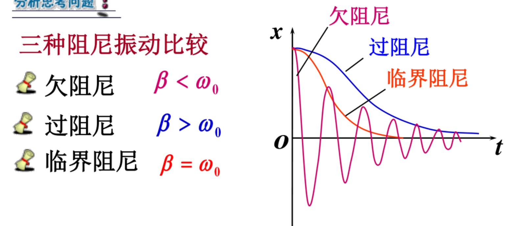
临界阻尼到达平衡点最快，过阻尼和临界阻尼不能往返运动。
- 受迫振动 物体在周期性外力下持续发生振动称为受迫振动，这个外力称为驱动力（要考虑弹性力，阻尼力和驱动力）。
这块貌似了解即可，在此贴出 ppt。

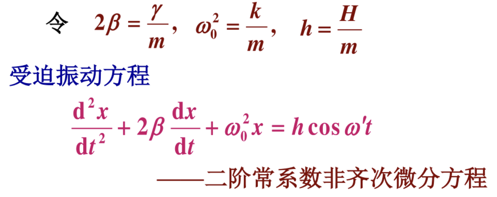


- 共振 当外界驱动力频率接近或等于系统固有频率时，受迫振动振幅达到最大值的现象称为共振，其频率为共振频率。
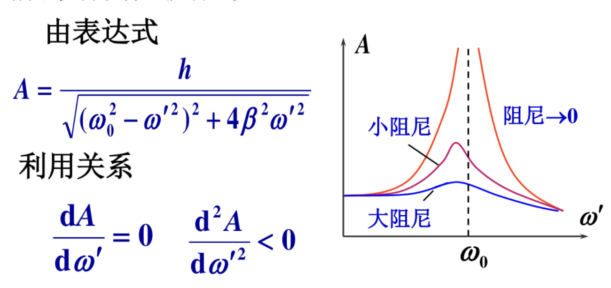
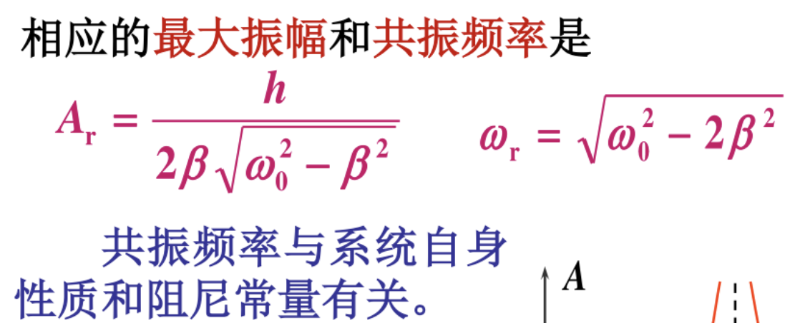
习题课（待完成）¶
第十一章 机械波¶
第十一章总结（待完成）¶
\(\S 11.1\) 波动的基本概念¶
- 机械波的产生和传播
- 波源：激发波动的振动系统。
- 弹性介质：能够传播机械振动的弹性介质。
- 振动是质点的个体行为，波动是质点振动的群体行为。波动是振动相位的传递，注意每个质点依然是在垂直方向上移动，并未左右移动。
- 横波：振动方向与波的传播方向垂直，如绳波。纵波：振动方向与波的传播方向平行，是靠介质疏密变化传播的，如声波，弹簧波。纵波可以在固液气中传播，而横波一般只在固体中传播。
- 波的几何描述
- 波线：表示波的传播方向的射线。
- 波面：相位相同的点组成的面。
- 波前：某一时刻，最前面的波面。
- 平面波：波面是平面的波。球面波：波面是球面的波。
- 描述波的物理量
- 波长：振动在一个周期内传播的距离为波长 \(\lambda\)，反映波在空间上的周期性。
- 周期和频率：周期 \(T\)，频率 \(\nu\)。反映波在时间上的周期。
- 波速：用 \(u\) 表示。\(\lambda = uT\)，\(u = \lambda \nu\)。
- 周期由波源决定，波速由介质决定。
- 不同频率的同一类型波在同一介质波速相同。
- 波在不同介质中频率不变。
\(\S 11.2\) 平面简谐波 波函数¶
- 平面简谐波：波面是平面，各质点做简谐运动的波。
-
波函数：描述任意时刻任意位置处质点的振动位移。这里往往用某一质点的振动方程代替任意质点的振动方程。
-
平面简谐波的波函数
-
波函数未特地说明时，默认在原点处。
-
波形以波速沿波线平移的波称为行波。
-
\(y = A\cos [\omega(t - \dfrac{x}{u}) + \phi]\)，把对应的时间 \(t_0\)，\(x_0\) 代入公式即可算出某时刻某位置的振动位置。
-
此类常考题型如下：

-
-
波动方程（考试不考）
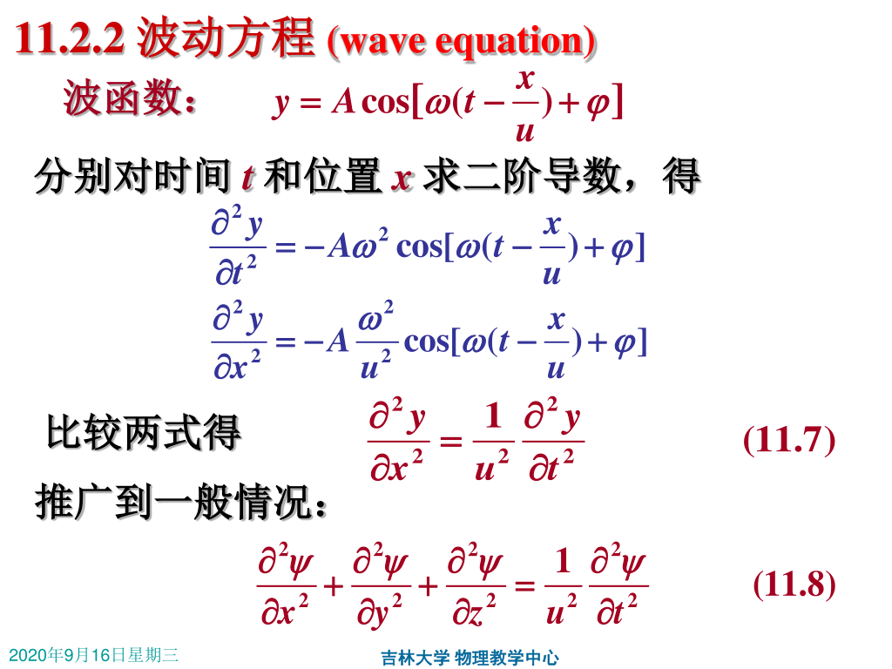
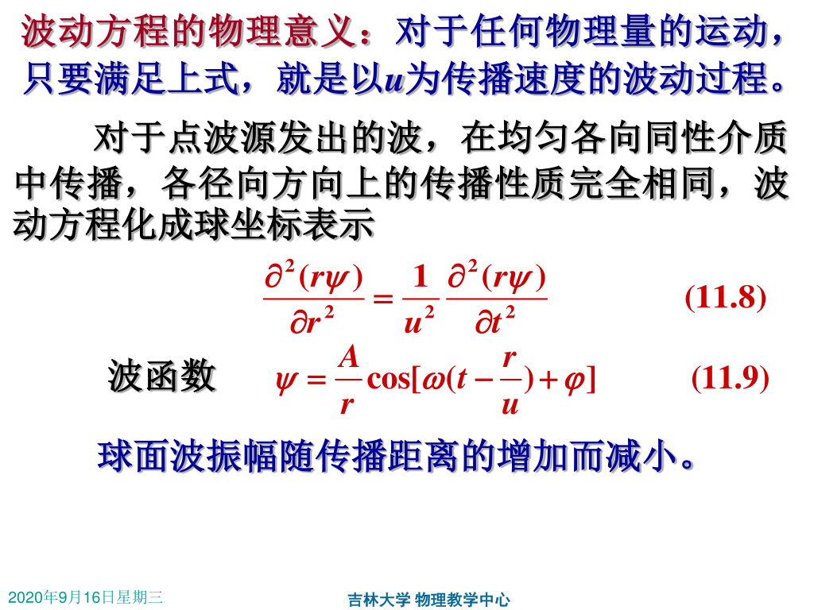
\(\S 11.3\) 波的能量 能流密度¶
-
波的能量
- 波具有动能和势能
对于质元而言
- 动能 \(dE_k = \dfrac{1}{2}(dm)v^2 = \dfrac{1}{2}(\rho dV)A^2\omega^2\sin^2\omega(t - \dfrac{x}{u})\)
- 势能 \(dE_P = \dfrac{1}{2}(\rho dV)A^2\omega^2\sin^2\omega(t - \dfrac{x}{u})\)（貌似上课也没讲怎么推导的，记住就行吧？.jpg）
注意质元在平衡位置处，动能，势能和总机械能均最大，质元位移最大时，三者均为 \(0\)。
\(dE = dE_p + dE_k = (\rho dV)A^2\omega^2\sin^2\omega(t - \dfrac{x}{u})\)
能量密度 \(w = \dfrac{dE}{dV} = \rho A^2\omega^2\sin^2\omega(t - \dfrac{x}u{})\)
平均能量密度 \(\bar w = \dfrac{1}{T}\int_0^T wdt = \dfrac{1}{2}\rho A^2\omega^2\)
不难发现每时每刻，动能和势能总是相同的，质元不与外界能量交换，总能量总是守恒的。
对于所有弹性波，平均能量密度和振幅平方，频率平方，介质密度成正比。
- 波的能流 平均能流密度
单位时间内通过垂直于波传播方向的某面积上能量称为能流，方向与速度相同。\(P = \dfrac{dE}{dt}\)。

平均能流 \(\bar P = \bar wuS = \dfrac{1}{2}\rho A^2\omega^2uS\)
平均能流密度：单位面积上的能流。
\(I = \dfrac{\bar P}{S} = \dfrac{1}{2}\rho A^2\omega^2u\)
矢量式 \(\vec I = \dfrac{1}{2}\rho A^2\omega^2\vec u\)
能流密度 \(I\) 也被称为波的强度。
平面简谐波 \(E = IS\)。
球面简谐波 \(E = 4\pi r^2I\)。
设单位半径上的球面振幅是 \(a\)，半径为 \(r\) 的球面上振幅为 \(A\)，由球心处放出的总能量相等，可以得出 \(A(r) = \dfrac{a}{r}\)，若球心处 \(y_o(t) \propto \cos(\omega t + \phi)\)，则 \(y_球 = \dfrac{a}{r}\cos(\omega(t - \dfrac{r}{u}) + \phi)\)。
- 声强 声强级
- 声振动：能够引起人们听觉效应的机械振动。
- 声波：在弹性介质中由声振动激发的波叫声波。
- 声波范围：20 ~ 20000 Hz 超声波：> 20000 Hz 次声波：< 20 Hz
- 声强：声波的平均能流密度叫声强。\(I = \dfrac{1}{2}\rho A^2\omega^2u\)，单位：\(W / m^2\)。
- 声强级：\(I_1 = 10lg\dfrac{I}{I_0}\)，单位：\(dB\)（分贝）。
\(\S 11.4\) 惠更斯原理¶
-
惠更斯原理：波在传播过程中，波面上每一点可以看作是发射子波的波源，这些子波源相当于继承原先波的能量，然后再传递给之后的波，后继的包迹决定新的波阵面。
-
波的衍射：波在传播过程中能够绕过障碍物而偏离直线传播的现象。衍射是波的基本特征之一，其强弱由障碍物尺寸和波长的关系决定。惠更斯原理只能定性解释波的衍射现象。
\(\S 11.5\) 波的叠加原理 波的干涉¶
- 波的叠加原理：
- 独立传播原理：波相遇后依然按照各自原来的特性，互不干涉。
- 叠加原理：某点的振动为引起该点振动波的矢量和。
- 波的干涉（这段 ppt 比较完整，直接放 ppt 力）

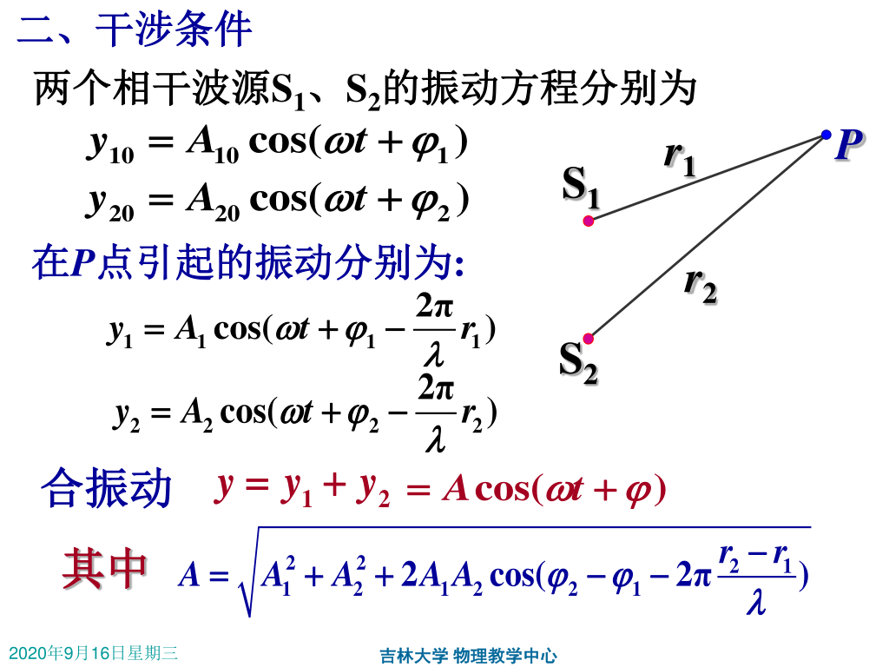
值得一提的是，这里波的干涉和前面第十章第三节的简谐振动的合成是十分类似的。


练习在精不在多，这里贴一道给出两种方法的练习题，分别用到本节知识和前面波函数的知识。
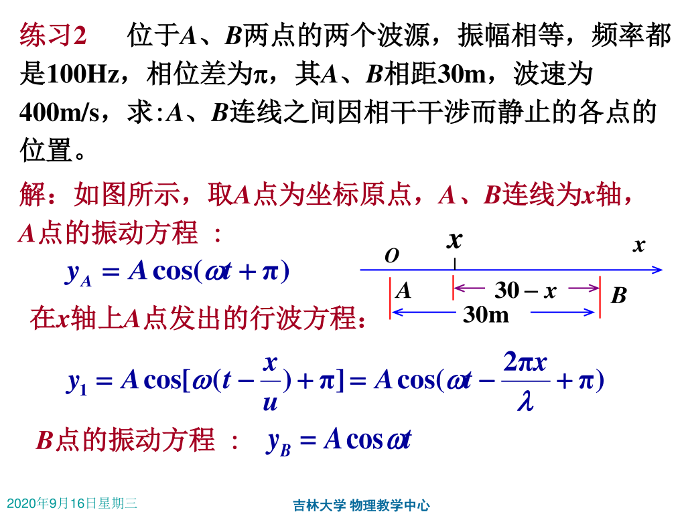

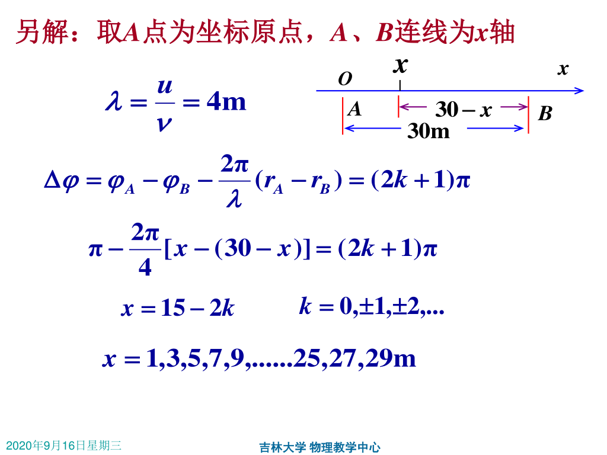
\(\S 11.6\) 驻波¶
- 驻波：沿相反方向传播的振幅相同的两列相干波相遇叠加会形成一种波形不向前传播的波。
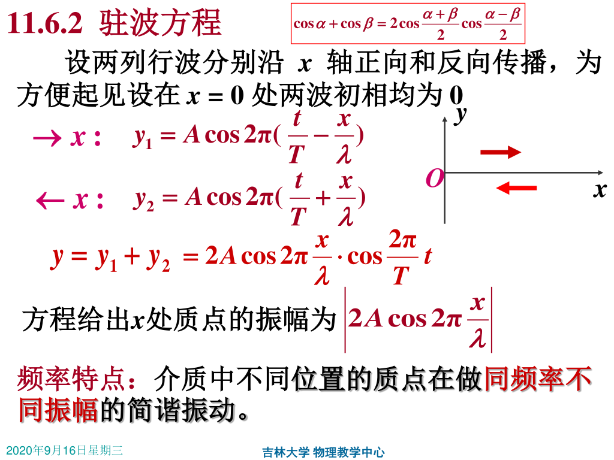


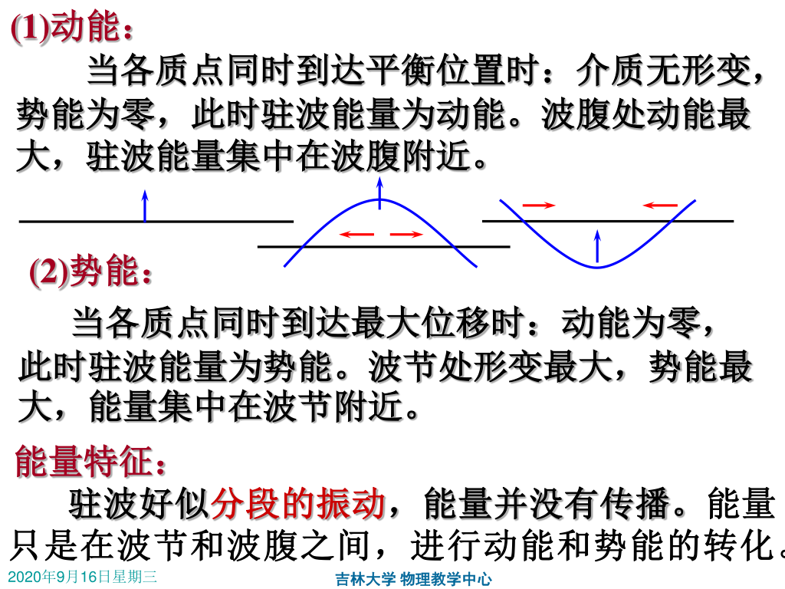
值得一提的是，能量在驻波中的分布是不均匀的，振动的能量在波节处分布相对更为集中。
-
半波损失
从一个介质到另一个介质，一部分反射形成的波叫反射波，一部分透射形成的波叫透射波。
透射波没有相位的损失，总是与入射波同相，但反射波，从光疏到光密会有相位 \(\pi\) 的突变，\(\phi' = \phi - \pi\)。
-
弦线上的驻波
驻波就是行波在弦线上前进过程中受到了阻挡，产生了反射，然后反射波和入射波叠加导致的。

前面的那道算两振源干涉的题目，也可以当作驻波来算：


\(\S 11.7\) 多普勒效应¶
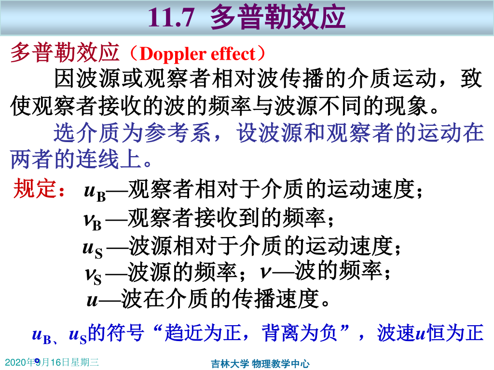


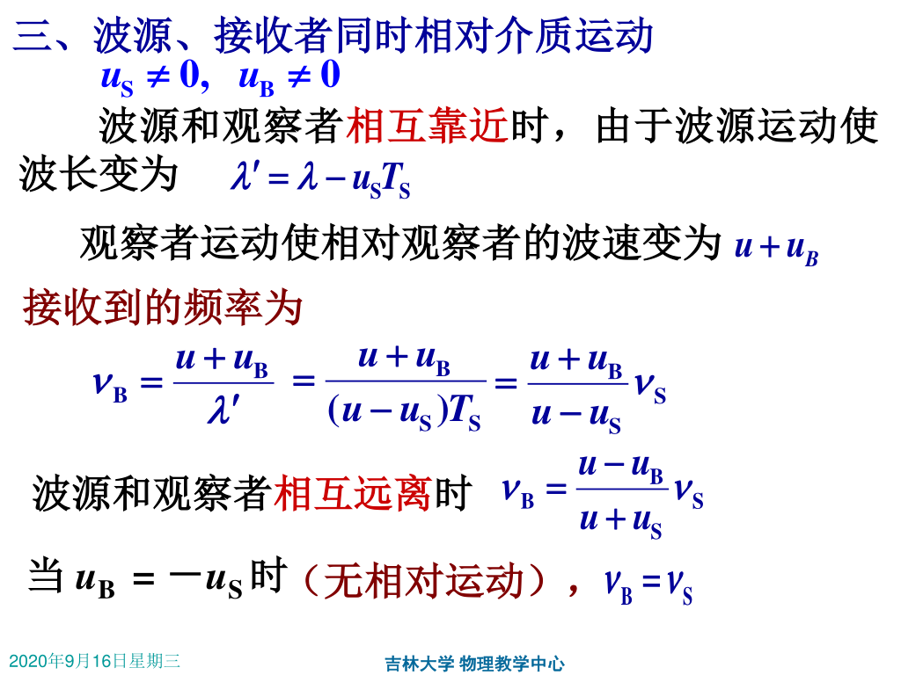
习题课（待完成）¶
第十二章 电磁波¶
前置知识回顾：
麦克斯韦方程组（部分）：
\(\oint E \cdot dl = -\dfrac{d\Phi_m}{dt}\)（法拉第电磁感应定律）
\(\oint H \cdot dl = -\dfrac{d\Phi_e}{dt}\)（安培定律）
其中 \(\Phi_m\) 是磁感应强度 \(B\) 的通量，\(\Phi_e\) 是电位移 \(D\) 的通量。
\(D = \varepsilon_0 E\) ，其中 \(D\) 是电位移矢量，\(E\) 是电场强度，\(\varepsilon_0\) 是真空介电常数。
\(H = \dfrac{B}{\mu_0}\) ，其中 \(H\) 是磁场强度，\(B\) 是磁感应强度，\(\mu_0\) 是磁导率。
第十二章总结（待完成）¶
\(\S 12.1\) 电磁波¶
- 变化磁场产生涡旋电场，变化电场产生涡旋磁场。电磁振源产生交变电磁场，交变电场和交变磁场相互激发，形成电磁波。
- 下面的推导了解即可
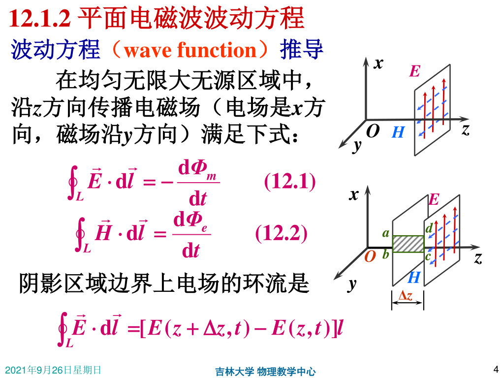
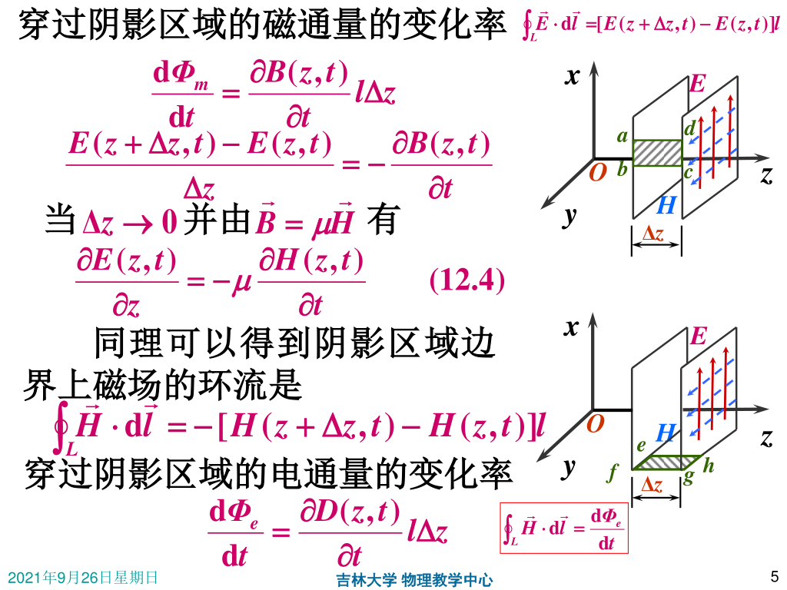


- 求解平面电磁波的微分方程，解为 \(E_x = E_0\cos\omega(t - \dfrac{z}{u}),H_y = H_0\cos\omega(t - \dfrac{z}{u})\)。

-
电磁波的能量传播
以电磁波形式传播出去的电磁能量称为辐射能。
能量密度 \(w = w_e + w_m = \dfrac{1}{2}\varepsilon E^2 + \dfrac{1}{2}\mu H^2 = \varepsilon E^2 = \mu H^2\) 。
单位时间通过垂直于传播方向的单位面积的电磁能称为能流密度，\(S = wu\)（其中 \(w\) 是能量密度）。
将 \(w = \dfrac{1}{2}\varepsilon E^2 + \dfrac{1}{2}\mu H^2\) 和 \(u = \dfrac{1}{\sqrt{\varepsilon \mu}}\) 代入公式，得 \(S = EH\)。矢量形式 \(\vec S = \vec E \times \vec H\)。\(\vec S\) 称为 Poynting vector。
将 \(S\) 对时间取平均值，\(I = \bar S = \bar E \bar H\)。\(I\) 称为电磁波的强度。
对于平面电磁波：\(I = \dfrac{1}{T}\int_0^TE_0H_0\cos^2\omega(t - \dfrac{z}{u})dt = \dfrac{1}{2}E_0H_0\)。
\(\S 12.2\) 电偶极子辐射电磁波¶
-
任何 LC 振荡电路都可以作为发射电磁波的振源，要想有效把电路中的电磁发射出去，除了补充能量外，还需要：1. 足够高的频率。2. 必须有开放的电路。
-
电偶极子辐射电磁波
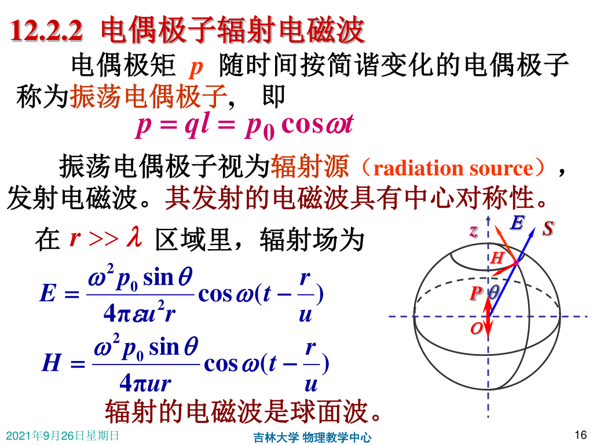


\(\S 12.3\) 电磁波谱¶
内容不重要，稍作了解即可（略）。
习题课（待完成）¶
第十三章 几何光学成像原理¶
第十三章总结¶
-
光程 \(L = ns\) 光在某一介质中的光程对应在真空中走相同时间的位移。
-
折射定律 \(n' \sin I' = n\sin I\)。光密到光疏可能发生全反射。
-
\(n_{21} = \dfrac{v_1}{v_2} = \dfrac{n_2}{n_1}\) 称为介质 \(2\) 相对于介质 \(1\) 的相对折射率，若介质 \(1\) 是真空则是绝对折射率。
-
一定要清楚符号规则。
-
高斯光学满足 \(u \approx \sin u\)。
-
\(\dfrac{n'}{l'} - \dfrac{n}{l} = \dfrac{n' - n}{r}\) 是本章最重要的公式，后续公式都是它的变形。
球面反射镜成像就是 \(n' = -n\) 的情况。
-
凸透镜 \(r > 0\)，凹面镜 \(r < 0\)。透镜左边的距离都是负的，右边距离都是正的。光轴向上是正的，光轴向下是负的。代入公式时一定要注意。
-
薄透镜成像
像方焦距 \(f' = \dfrac{n_2'}{\dfrac{n_2' - n}{r_2} + \dfrac{n - n_1}{r_1}}\)
物方焦距 \(f = \dfrac{-n_1}{\dfrac{n_2' - n}{r_2} + \dfrac{n - n_1}{r_1}}\)
物像关系满足 \(\dfrac{f'}{l'} + \dfrac{f}{l} = 1\)，不过大多数都是在空气中传播，故有 \(\dfrac{1}{l'} - \dfrac{1}{l} = \dfrac{1}{f'}\)
\(\S 13.1\) 光线及其传播的基本定律¶
-
光程与光程方程
\(L = ns\) 光程等于路线距离和折射率的乘积。
光在某一介质中的光程对应在真空中走相同时间的位移。
光程方程 \((\dfrac{\partial L}{\partial x})^2 + (\dfrac{\partial L}{\partial y})^2 + (\dfrac{\partial L}{\partial z})^2 = n^2\)。
-
光线与光波方程
某一时刻，光波相位相同点构成的曲面称为波面，其法线是光线。
光线方程 \(\dfrac{d}{ds} (n\dfrac{d \vec r}{ds}) = \nabla n\)。
-
几何光学定律
在不考虑光的波动性的情况下，光沿直线传播，且光束之间互不干扰。
反射定律 \(I'' = -I\)。
折射定律 \(n' \sin I' = n\sin I\)。
特殊的，若 \(\sin I' = \dfrac{n}{n'} \sin I \ge 1\) 是会发生全反射现象。
-
折射率
\(n_{21} = \dfrac{v_1}{v_2} = \dfrac{n_2}{n_1}\) 称为介质 \(2\) 相对于介质 \(1\) 的相对折射率。
若介质 \(1\) 为真空，则 \(n = \dfrac{c}{v}\) 为介质 \(2\) 的绝对折射率。
\(\S 13.2\) 成像基本概念与光路计算¶
-
光学系统
若干光学零件组成的系统称为光学系统，穿过表面曲率中心的公共轴线叫光轴。
-
物与像
物是入射光线汇聚成的，像是出射光线汇聚成的。
物所在一侧称为物空间，但像既可能在物空间也可能在像空间。
物与像是成对出现的，而且限定在光学系统中讨论。

\(\S 13.3\) 高斯光学¶
-
近轴光线
由于入射角很小，故满足 \(u \approx \sin u\)，研究近轴光线物象关系的光学称为近轴光学，又称为高斯光学。
-
球面折射物像位置关系

通过推导以及高斯光学的特点，我们可以得到折射球面物像位置公式： $$ \dfrac{n'}{l'} - \dfrac{n}{l} = \dfrac{n' - n}{r} \ n'(\dfrac{1}{r} - \dfrac{1}{l'}) = n(\dfrac{1}{r} - \dfrac{1}{l}) = Q(阿贝不变量) $$ 成的像称为高斯像。
- 横向放大率
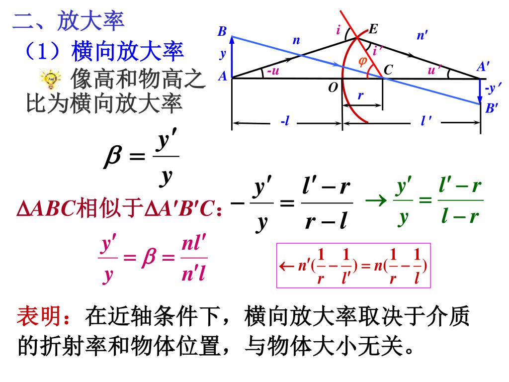
\(\beta > 0\)，\(l\) 与 \(l'\) 同号，物像位于同一侧，方向相同，虚实性质相反，正立。
\(\beta < 0\)，\(l\) 与 \(l'\) 异号，物像位于两侧，方向相反，虚实性质相同，倒立。
-
轴向放大率
\(\alpha = \dfrac{dl'}{dl} = \dfrac{n'}{n} \beta^2\)

通过这道例题主要是要知道怎么取值的正负。
-
球面反射镜近轴成像光路
可以看作折射的一种特殊情况，把 \(n' = -n\) 即可。
物像位置公式 \(\dfrac{1}{l'} + \dfrac{1}{l} = \dfrac{2}{r}\)。
- 横向放大率 \(\beta = \dfrac{nl'}{n'l} = -\dfrac{l'}{l}\)。
\(\beta < 0\)，\(l\) 与 \(l'\) 同号，物像位于同一侧，虚实性质相同，倒立。
\(\beta > 0\)，\(l\) 与 \(l'\) 异号，物像位于两侧，虚实性质相反，正立。
- 轴向放大率 \(\alpha = -\dfrac{l'^2}{l^2} = -\beta^2\)。
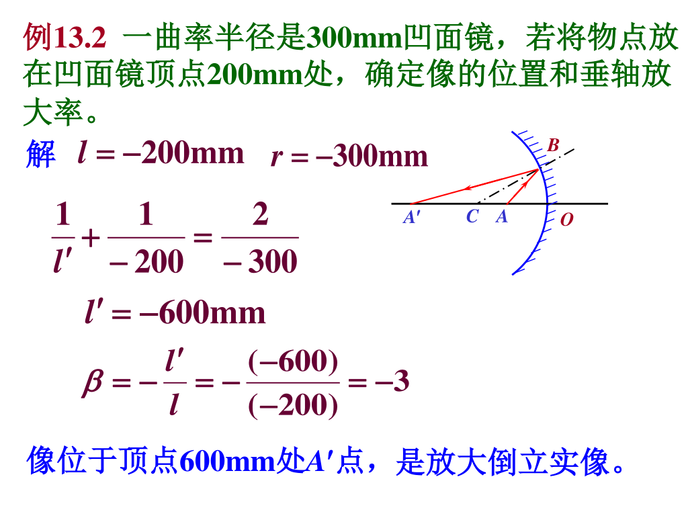
-
薄透镜近轴成像光路

由于薄透镜有前后两个面，利用两次 \(\dfrac{n'}{l'} - \dfrac{n}{l} = \dfrac{n' - n}{r}\) 公式，可以得到 \(\dfrac{n_2'}{l_2'} - \dfrac{n_1}{l_1} = \dfrac{n_2' - n}{r_2} + \dfrac{n - n_1}{r_1}\)。
特殊的，由于 \(l_1 \to \infty\) 时可以得出像方焦距 \(l_2' = f'\)，带入上述公式得到 \(f' = \dfrac{n_2'}{\dfrac{n_2' - n}{r_2} + \dfrac{n - n_1}{r_1}}\)。
由于 \(l_2 \to \infty\) 时可以得出物方焦距 \(l_1 = f\)，带入上述公式得到 \(f = \dfrac{-n_1}{\dfrac{n_2' - n}{r_2} + \dfrac{n - n_1}{r_1}}\)。
对于光焦度的定义是 \(\Phi = \dfrac{n_2'}{f'} = \dfrac{n_2' - n}{r_2} + \dfrac{n - n_1}{r_1}\)。
两个焦距之间关系是 \(\dfrac{f'}{f} = -\dfrac{n_2'}{n_1}\)。
物像之间关系满足 \(\dfrac{f'}{l'} + \dfrac{f}{l} = 1\)。
特殊的，当透镜出于同种介质内，有 \(f + f' = 0\)，此时上述公式可以变为 \(\dfrac{1}{l'} - \dfrac{1}{l} = \dfrac{1}{f'}\)。
-
横向放大率 \(\beta = \dfrac{y_2'}{y_1} = \dfrac{y_1'}{y_1} \cdot \dfrac{y_2'}{y_2} = \beta_1 \cdot \beta_2 =\dfrac{n_1l_2'}{n_2'l_1}\)。
\(\beta > 0\)，\(l\) 与 \(l'\) 同号，物像位于同一侧，方向相同，虚实性质相反，正立。
\(\beta < 0\)，\(l\) 与 \(l'\) 异号，物像位于两侧，方向相反，虚实性质相同，倒立。
-
轴向放大率 \(\alpha = \dfrac{n_2'}{n_1}\beta^2\)。
特殊的，空气中 \(\beta = \dfrac{l'}{l}, \alpha = \beta^2\)。
习题课（待完成）¶
第十四章 光的干涉¶
第十四章总结（待完成）¶
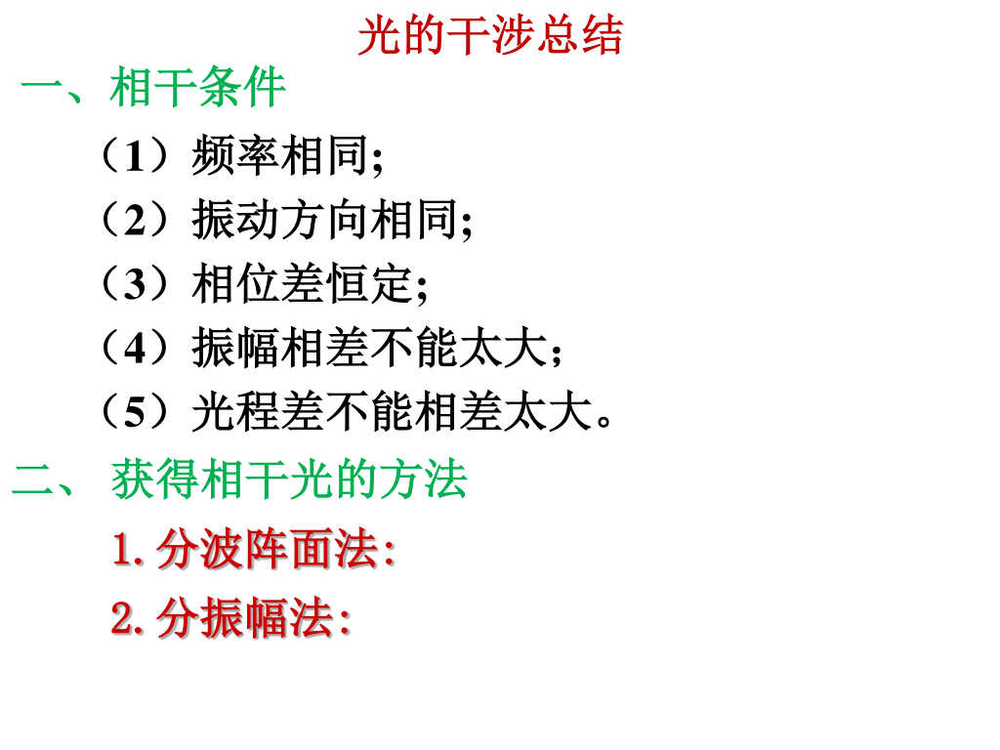

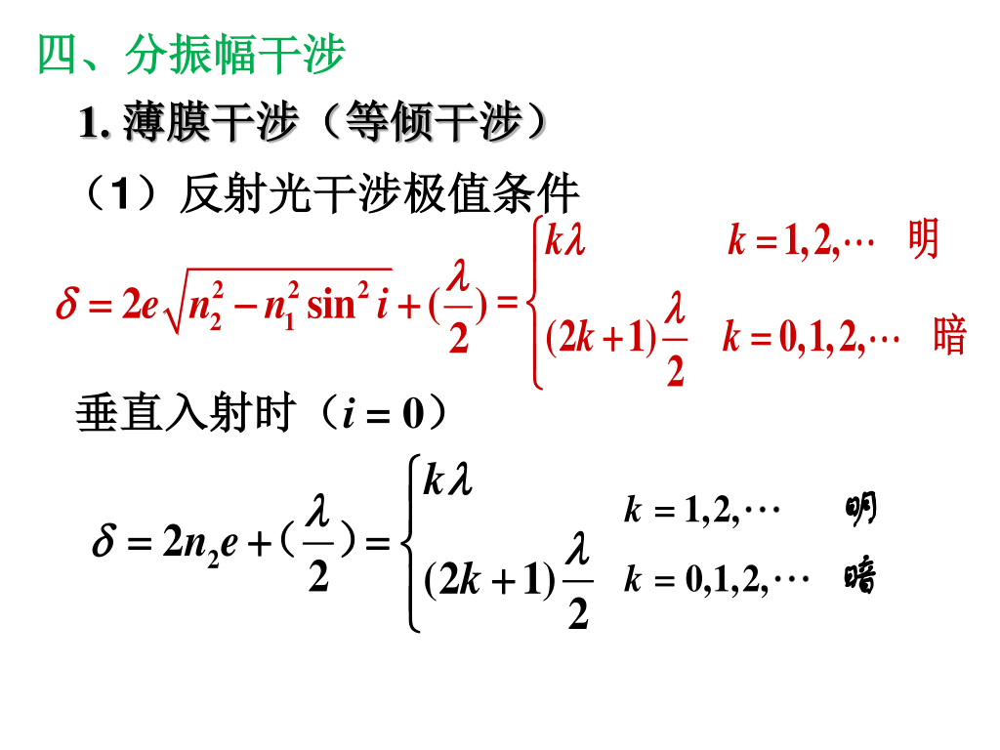


\(\S 14.1\) 光的相干性¶
- 光的干涉，想干条件
光是电磁波，感光主要是靠电磁波，所以将电场强度 \(\vec E\) 称为光矢量。
光波相遇可以看作是若干振动的叠加，振动的加强是亮条纹，减弱是暗条纹，这种现象称为光的干涉。
相干条件
- 只有平行振动分量间才能发生干涉。
- 频率相同的光波之间才能发生干涉。
- 相位差恒定的光波才能发生干涉。
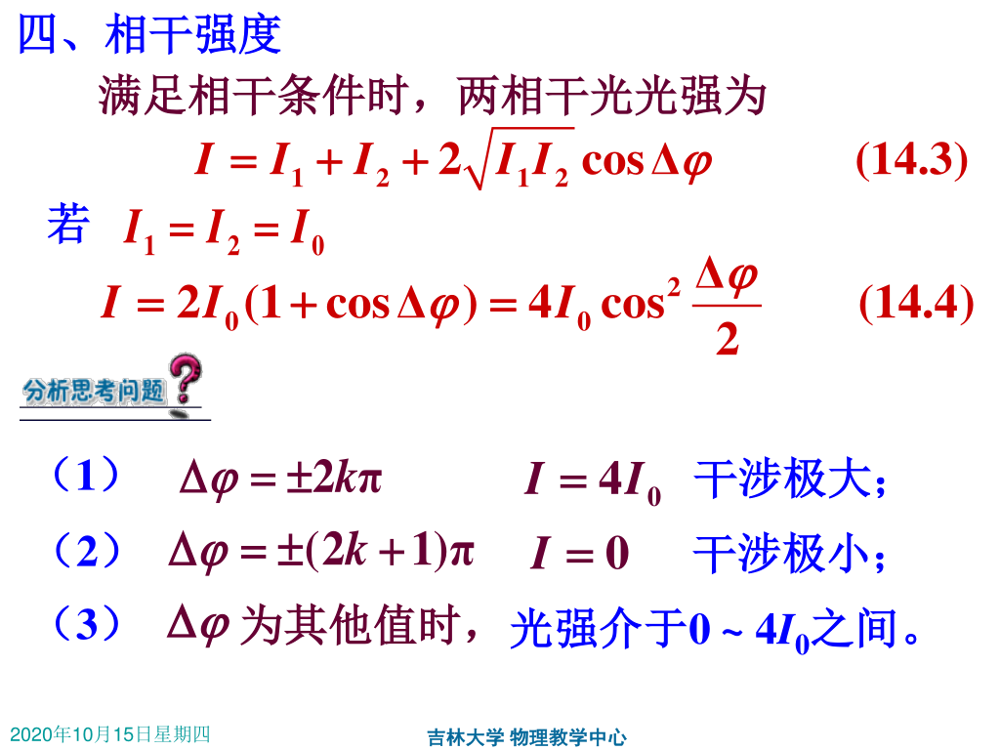
光强 I 在这里表示某种平方。
- 光程差
在不同介质中，\(\delta = n_2r_2 - n_1r_1\) 称为光程差，\(\Delta \varphi = \dfrac{2 \pi}{\lambda} \delta\) 是相位差。
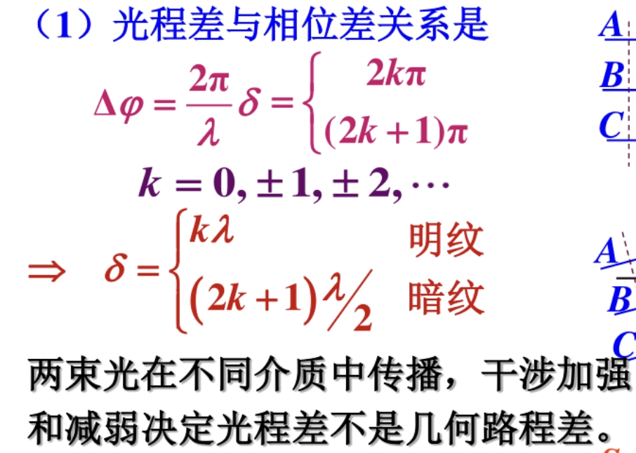
- 获得相干光的方法
主要分为以下两类

注：振幅相差不能太大。并且光程差也不能太大。
\(\S 14.2\) 分波阵面干涉¶
- 杨氏双缝干涉


条纹明暗相间且条纹等间距（单色光情况），对称分布在中央明纹两边。满足 \(\Delta x = \dfrac{D}{a}\lambda\)。（指的是相邻明纹与明纹 / 暗纹与暗纹的间距）
若将整个装置放在折射率为 \(n\) 的介质中，\(\Delta x = \dfrac{D}{na}\lambda\)。
对于白色光，条纹是彩色条纹。
- 劳埃德镜实验
验证了半波损失。
- 空间相干性和时间相干性
光的相干性质会和时间，空间相关。空间会影响光程差，而时间太长会直接导致无法相干。
空间相干性
由于实际中光源的光是由宽度的，所以要考虑空间相干性对光的干涉产生的影响。

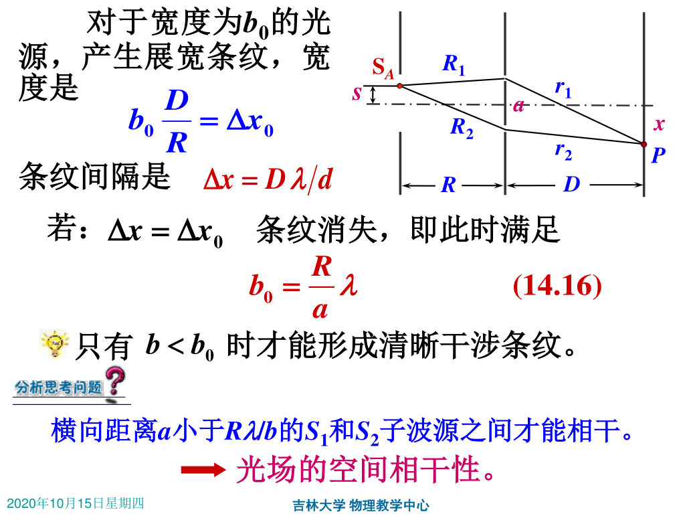
时间相干性
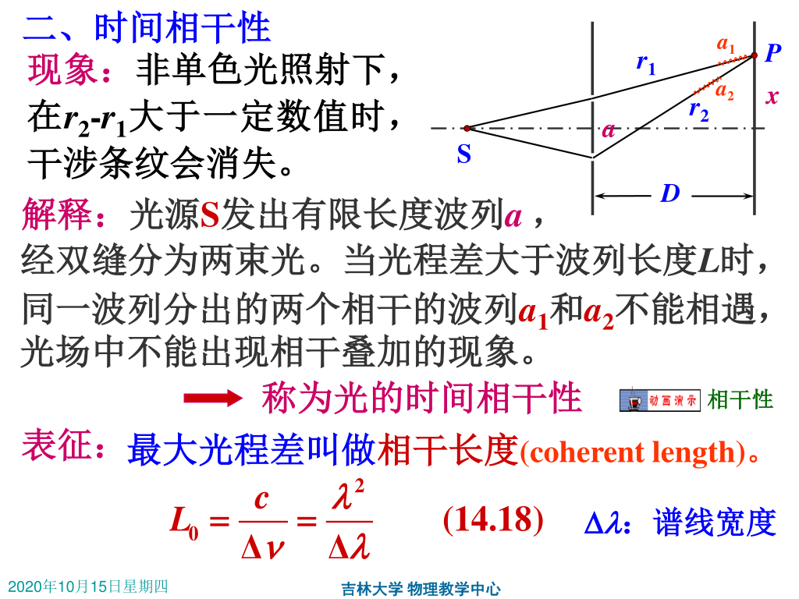
- 例题
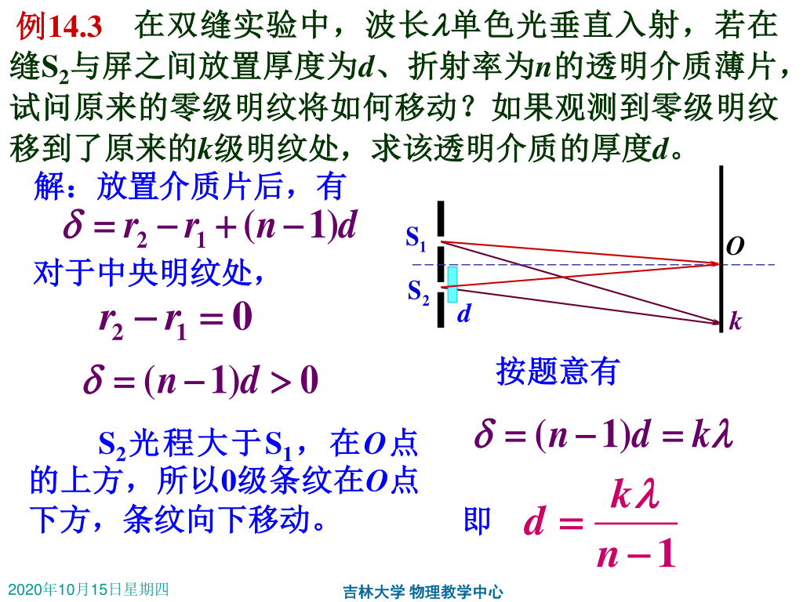
\(\S 14.3\) 分振幅干涉¶
本节中提到了半波损失，半波损失条件：
- 反射。
- 从光疏介质到光密介质的反射。
- 薄膜干涉
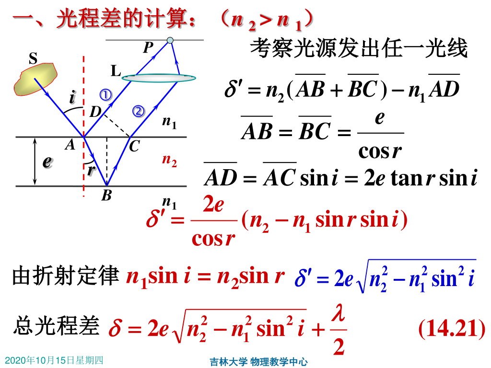
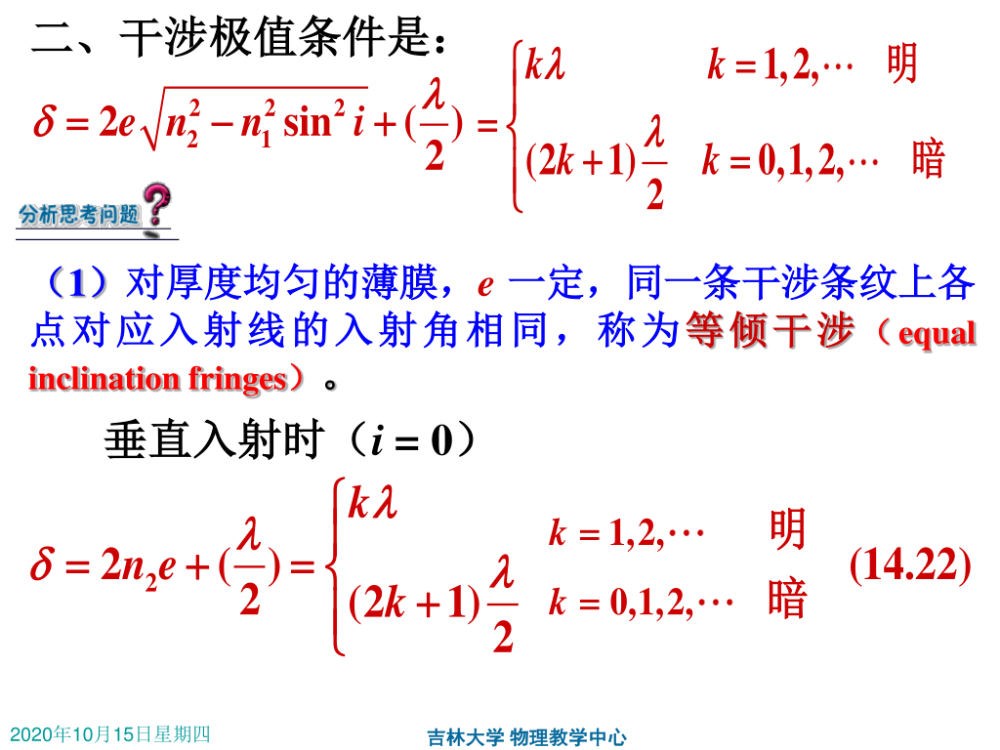

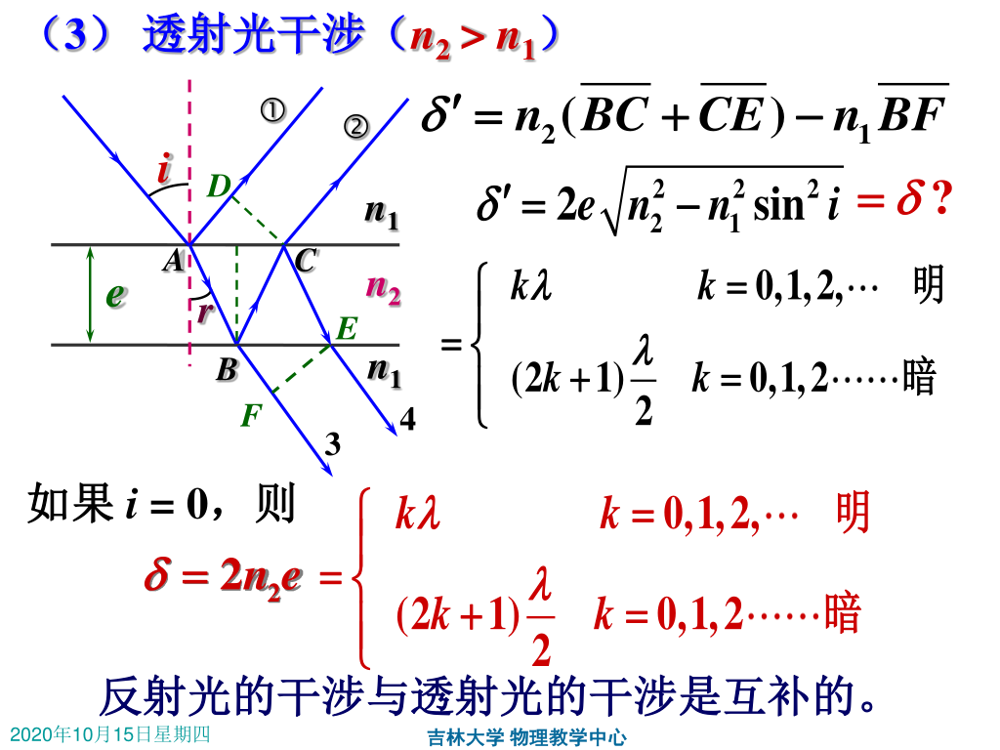
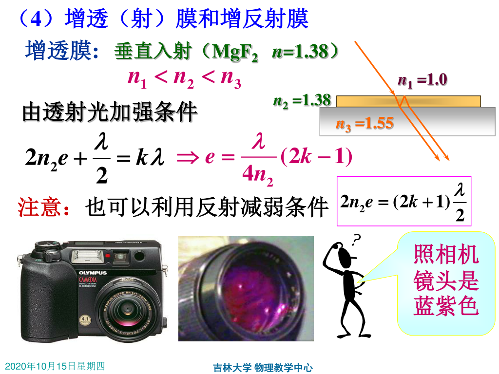

- 劈尖干涉
劈尖干涉要求两个劈尖平面夹角很小。


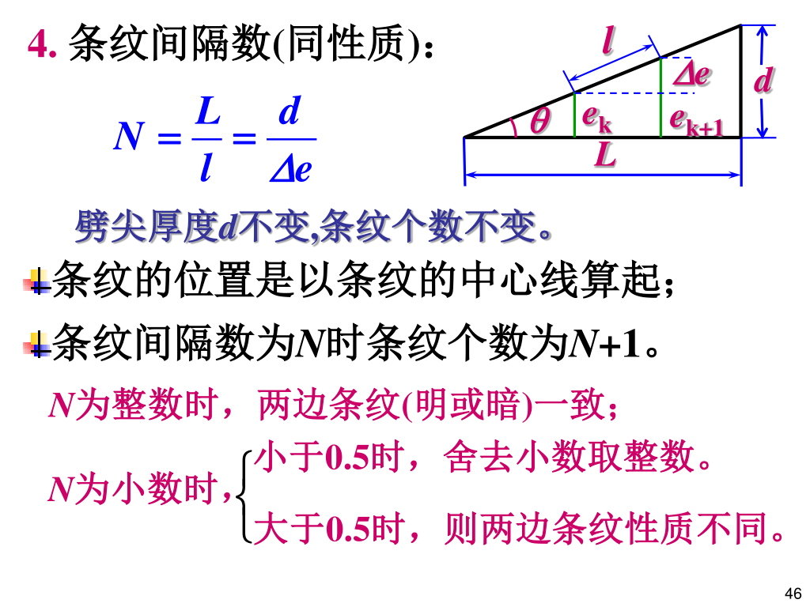
第十五章 光的衍射¶
第十六章总结¶
\(\S 15.1\) 光的衍射现象 惠更斯 - 菲涅尔原理¶
- 光的衍射现象
光在传播过程中绕过障碍物的边缘，偏离直线传播的现象叫光的衍射。
光的衍射和分为菲涅尔衍射和夫琅禾费衍射。

- 惠更斯 - 菲涅尔原理

\(\S 15.2\) 夫琅禾费单缝衍射¶
- 衍射现象的讨论

对于光屏某一个固定的点，\(\varphi\) 角度是固定的。即 \(\varphi\) 只和选取的 \(P\) 点有关。


注意这里 \(k\) 取 \(0\) 的时候其实被中央明纹包含在内了，所以第一级明纹应从 \(k = 1\) 开始，即 \(\dfrac{3\lambda}{2}\)。
- 单缝衍射条纹特点


\(\S 15.4\) 光栅衍射¶
- 衍射光栅
光栅：有大量等宽间距平行狭缝组成的光学元件。
缝宽 \(a\)，间距 \(b\)，\(d = a + b\) 为结构参量，称为光栅结构。 \(d\) 的数量级约为 \(10^{-5} \sim 10^{-6}\)。

- 光栅衍射条纹的形成
光栅的自身衍射和各缝之间的干涉共同决定了光通过光栅后的光强分布，也就是说光栅衍射条纹是单缝衍射和多缝干涉的总效果。


本来是暗纹的一定还是暗纹，本来是明纹的可能因为不同光的干涉变成暗纹。
- 光栅光谱
白光入射时，光栅能把不同波长光分散开，称为色散。